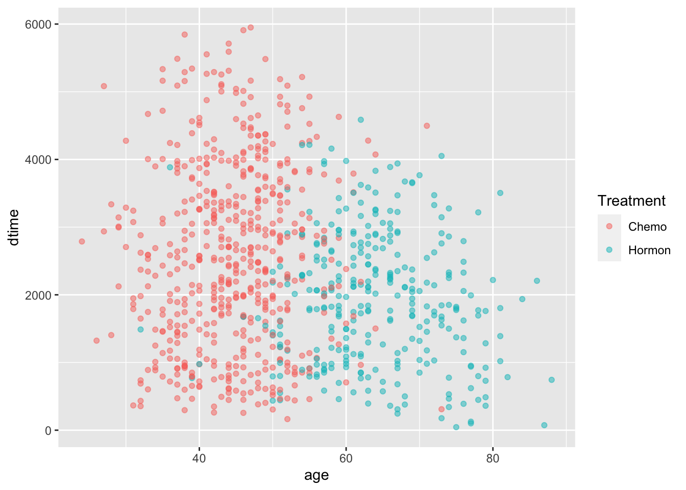
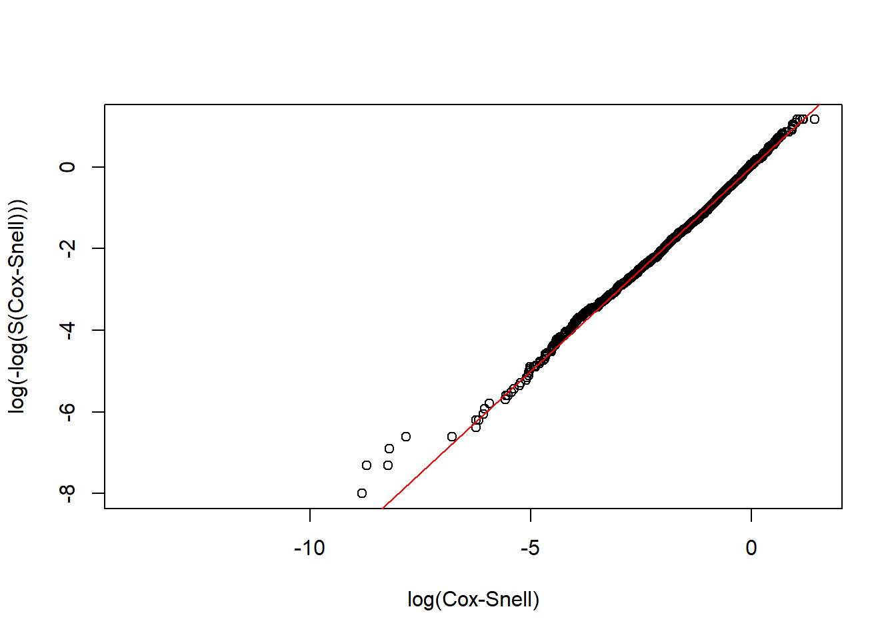

Chapter3 Survival
3.1 Loading Data
3.2 Kaplan-Miere
3.2.1 size vs. Survival Times
size vs. dtime
KM_None_Death <- survfit(Surv(dtime, death) ~ size, data = rotterdam)
plot(KM_None_Death, conf.type = "plain", col = c("black","red","blue"), xlab="Days", ylab="Survival")
legend(6000, 1, legend=c("<=20", "20-50", ">50"),
col=c("black", "red", "blue"), lty=1, cex=0.8,
title="Tumor Size", text.font=6)
size vs. rtime
KM_None_Recur <- survfit(Surv(rtime, recur) ~ size, data = rotterdam)
plot(KM_None_Recur, conf.type = "plain", col = c("black","red","blue"), xlab="Days", ylab="Survival")
legend(6000, 1, legend=c("<=20", "20-50", ">50"),
col=c("blue", "red", "blue"), lty=1, cex=0.8,
title="Tumor Size", text.font=6)3.2.2 Nodes_level vs. Survival Times
Nodes_level vs. dtime
KM_None_Death <- survfit(Surv(dtime, death) ~ Nodes_level, data = rotterdam)
plot(KM_None_Death, conf.type = "plain", col = c("black","red","blue","orange"), xlab="Days", ylab="Survival")
legend(5000, 1, legend=c("Both", "Chemo","Hormon", "NaN/Other Treatment"),
col=c("black", "red", "blue", "orange"), lty=1, cex=0.8,
title="Treatment Group", text.font=6)
Nodes_level vs. rtime
KM_None_Recur <- survfit(Surv(rtime, recur) ~ Nodes_level, data = rotterdam)
plot(KM_None_Recur, conf.type = "plain", col = c("black","red","blue","orange"), xlab="Days", ylab="Survival")
legend(5000, 1, legend=c("Both", "Chemo","Hormon", "NaN/Other Treatment"),
col=c("black", "red", "blue", "orange"), lty=1, cex=0.8,
title="Treatment Group", text.font=6)
3.2.3 Treatment vs. Survival Times
Treatment vs. dtime
KM_Treatment_Death <- survfit(Surv(dtime, death) ~ Treatment, data = rotterdam)
plot(KM_Treatment_Death, conf.int = FALSE, col = c("black", "red", "blue", "orange"), xlab="Days", ylab="Survival")
legend(1, 0.4, legend=c("Both", "Chemo","Hormon", "NaN/Other Treatment"),
col=c("black", "red", "blue", "orange"), lty=1, cex=0.8,
title="Treatment Group", text.font=6)
Treatment vs. rtime
KM_Treatment_Recur <- survfit(Surv(rtime, recur) ~ Treatment, data = rotterdam)
plot(KM_Treatment_Recur, conf.int = FALSE, col = c("black", "red", "blue", "orange"), xlab="Days", ylab="Survival")
legend(1, 0.4, legend=c("Both", "Chemo","Hormon", "NaN/Other Treatment"),
col=c("black", "red", "blue", "orange"), lty=1, cex=0.8,
title="Treatment Group", text.font=6)
3.3 Parametric Models
# The Cox-Snell function takes as inputs
# 1. A vector of Cox-Snell residuals created by the user based on the model being evaluated,
# 2. A status vector
# 3. Optional x- and y- limits for the resulting plot
CoxSnell = function(cs,status,xlim=NULL,ylim=NULL)
{
kmcs = survfit(Surv(jitter(cs,amount=(max(cs)-min(cs))/1000),status) ~ 1)$surv
plot(log(-log(kmcs)) ~ sort(log(cs)) ,
xlab="log(Cox-Snell)", ylab="log(-log(S(Cox-Snell)))", xlim=xlim, ylim=ylim )
abline(0,1,col='red')
}Log-normal model:
Dlnorm <- survreg(Surv(dtime, death) ~ Treatment + size + nodes + age , dist='lognormal', data=rotterdam)
Dlnorm## Call:
## survreg(formula = Surv(dtime, death) ~ Treatment + size + nodes +
## age, data = rotterdam, dist = "lognormal")
##
## Coefficients:
## (Intercept) TreatmentChemo
## 9.709442268 -0.431016329
## TreatmentHormon TreatmentNaN/Other Treatment
## -0.346351742 -0.423626557
## size20-50 size>50
## -0.372703559 -0.654189313
## nodes age
## -0.079103425 -0.009903862
##
## Scale= 1.077329
##
## Loglik(model)= -12034.1 Loglik(intercept only)= -12286.5
## Chisq= 504.67 on 7 degrees of freedom, p= <2e-16
## n= 2982CS_Death <- -log(1 - plnorm(rotterdam$dtime, 9.709442268-0.431016329*(rotterdam$Treatment=="Chemo")
-0.346351742*(rotterdam$Treatment=="Hormon")
-0.423626557*(rotterdam$Treatment=="NaN/Other Treatment")
-0.372703559*(rotterdam$size=="20-50")
-0.654189313*(rotterdam$size==">50")
-0.079103425*rotterdam$nodes
-0.009903862*rotterdam$age,
1.077329))
# Make appropriate graph using CoxSnell function
CoxSnell(CS_Death, rotterdam$death)
Rlnorm <- survreg(Surv(rtime, recur) ~ Treatment + size + nodes + age, dist='lognormal', data=rotterdam)
Rlnorm## Call:
## survreg(formula = Surv(rtime, recur) ~ Treatment + size + nodes +
## age, data = rotterdam, dist = "lognormal")
##
## Coefficients:
## (Intercept) TreatmentChemo
## 8.514204484 -0.382172447
## TreatmentHormon TreatmentNaN/Other Treatment
## -0.479063703 -0.605193863
## size20-50 size>50
## -0.458345796 -0.738657689
## nodes age
## -0.107708963 0.009059467
##
## Scale= 1.340545
##
## Loglik(model)= -13803.8 Loglik(intercept only)= -14045.8
## Chisq= 483.94 on 7 degrees of freedom, p= <2e-16
## n= 2982CS_Recur <- -log(1 - plnorm(rotterdam$rtime, 8.514204484-0.382172447*(rotterdam$Treatment=="Chemo")
-0.479063703*(rotterdam$Treatment=="Hormon")
-0.605193863*(rotterdam$Treatment=="NaN/Other Treatment")
-0.458345796*(rotterdam$size=="20-50")
-0.738657689*(rotterdam$size==">50")
-0.107708963*rotterdam$nodes
+0.009059467*rotterdam$age,
1.340545))
# Make appropriate graph using CoxSnell function
CoxSnell(CS_Recur, rotterdam$recur)
3.4 Cox-PH model:
m_death = coxph(Surv(dtime, death) ~ Treatment + size + nodes + strata(age), data=rotterdam)
m_death## Call:
## coxph(formula = Surv(dtime, death) ~ Treatment + size + nodes +
## strata(age), data = rotterdam)
##
## coef exp(coef) se(coef) z p
## TreatmentChemo 0.566734 1.762501 0.368984 1.536 0.125
## TreatmentHormon 0.571493 1.770909 0.375700 1.521 0.128
## TreatmentNaN/Other Treatment 0.497674 1.644890 0.365574 1.361 0.173
## size20-50 0.464177 1.590704 0.066890 6.939 3.94e-12
## size>50 0.772204 2.164532 0.097352 7.932 2.16e-15
## nodes 0.078158 1.081294 0.005365 14.567 < 2e-16
##
## Likelihood ratio test=391.7 on 6 df, p=< 2.2e-16
## n= 2982, number of events= 1272## chisq df p
## Treatment 3.60 3 0.31
## size 4.32 2 0.12
## nodes 1.37 1 0.24
## GLOBAL 9.64 6 0.14## Call:
## coxph(formula = Surv(rtime, recur) ~ size, data = rotterdam)
##
## coef exp(coef) se(coef) z p
## size20-50 0.55148 1.73583 0.05586 9.872 <2e-16
## size>50 1.04332 2.83861 0.08148 12.804 <2e-16
##
## Likelihood ratio test=185.3 on 2 df, p=< 2.2e-16
## n= 2982, number of events= 1518## chisq df p
## size 35.5 2 1.9e-08
## GLOBAL 35.5 2 1.9e-08